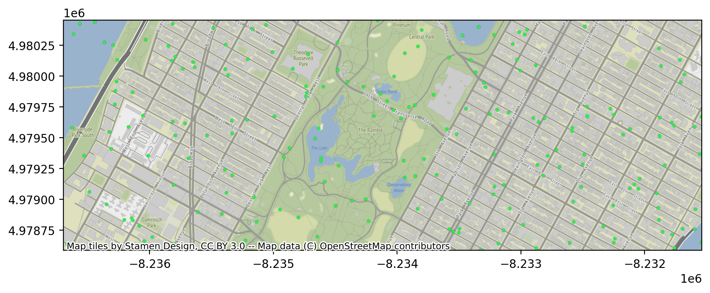
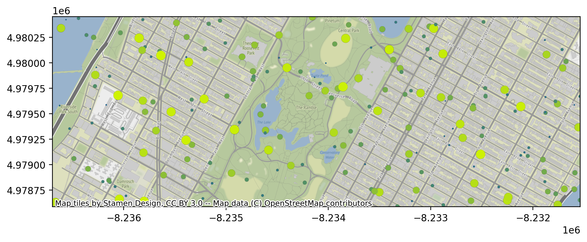
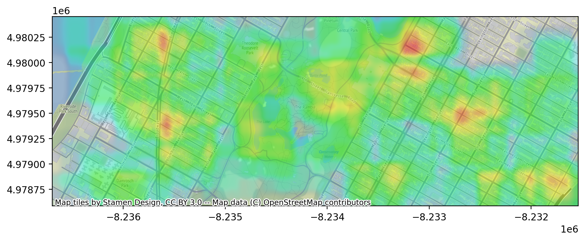
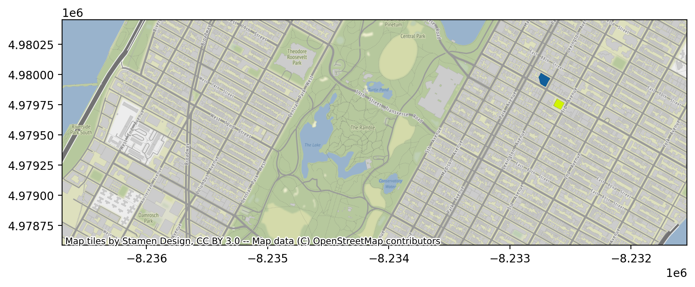
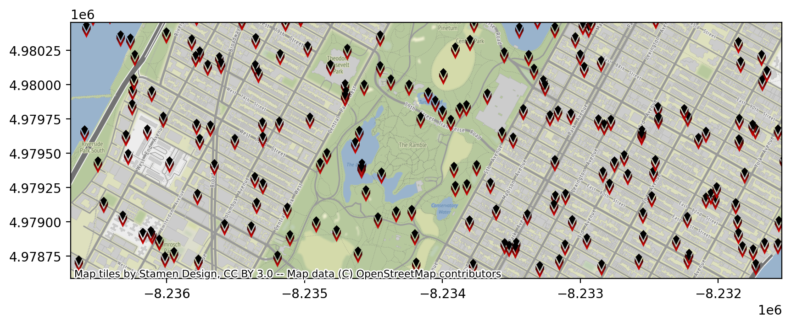
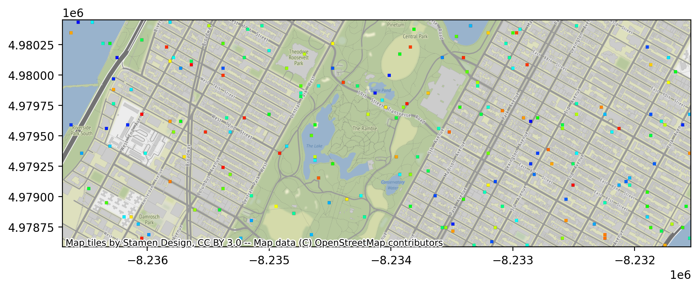

使用 Arctern 展示时空信息¶
Arctern 可以绘制多种类型的透明图层，并将这些透明图层叠加到地图背景上。本文介绍如何使用 Arctern 展示时空信息。
生成模拟数据¶
首先，使用随机数据生成一个出租车运营数据，之后我们将使用此数据绘图。
>>> import pandas as pd
>>>
>>> def gen_data(num_rows, bbox):
... import random
... pickup_longitude = [(bbox[2]-bbox[0])*random.random()+bbox[0] for i in range(num_rows)]
... pickup_latitude = [(bbox[3]-bbox[1])*random.random()+bbox[1] for i in range(num_rows)]
... fare_amount = [100*random.random() for i in range(num_rows)]
... tip_amount = [fare*(random.random()*0.05+0.15) for fare in fare_amount]
... total_amount = [fare_amount[i]+tip_amount[i] for i in range(num_rows)]
... return pd.DataFrame({"pickup_longitude":pickup_longitude,
... "pickup_latitude":pickup_latitude,
... "fare_amount":fare_amount,
... "total_amount":total_amount})
>>> num_rows=200
>>> bbox=[-73.991504, 40.770759, -73.945155, 40.783434]
>>> df=gen_data(num_rows,bbox)
>>> df
以上代码在经度范围为 -73.991504 ~ -73.945155、纬度范围为 40.770759 ~ 40.783434 的地理区域中，随机提取 200 个坐标点作为出租车的上车地点，并生成随机的运营费用。出租车运营数据中各参数的描述如下：
| 名称 | 含义 | 类型 |
|---|---|---|
| pickup_longitude | 上车地点的经度 | double |
| pickup_latitude | 上车地点的纬度 | double |
| fare_amount | 行程费用 | double |
| total_amount | 总费用 | double |
安装依赖库¶
$ conda install -c conda-forge matplotlib
$ conda install -c conda-forge contextily
$ conda install -c conda-forge pyproj
导入绘图需要使用的模块¶
导入以下库：
arctern: 提供绘制和保存地理信息图层的模块。
matplotlib: 提供在 Juypter Notebook 中绘制图片的模块。
>>> import arctern
>>> from arctern.util import save_png, vega
>>> import matplotlib.pyplot as plt
>>> import matplotlib.image as mpimg
点图¶
使用 plot.pointmap 方法根据出租车运营数据绘制点图。其中，点的位置为上车地点、点的大小为 10、颜色为 #2DEF4A、不透明度为 1。
>>> fig, ax = plt.subplots(figsize=(10, 6), dpi=200)
>>> arctern.plot.pointmap(ax,
... arctern.GeoSeries.point(df.pickup_longitude,df.pickup_latitude),
... bbox,
... point_size=10,
... point_color="#2DEF4A",
... opacity=1,
... coordinate_system="EPSG:4326")

带权点图¶
使用 plot.weighted_pointmap 方法根据出租车运营数据绘制带权点图。其中，点的位置为上车地点，点的颜色根据出租车的行程费用（df.fare_amount）在 #115f9a ～ #d0f400 之间变化，点的大小根据出租车的总费用（df.total_amount）在 5 ～ 30 之间变化，点的不透明度为 1。
>>> color_bound=[df.fare_amount.min(), df.fare_amount.max()]
>>>
>>> size_bound=[5, 30]
>>> total_max=df.total_amount.max()
>>> total_min=df.total_amount.min()
>>> size_weights = [(v-total_min)/(total_max-total_min)*(size_bound[1]-size_bound[0])+size_bound[0] for v in df.total_amount]
>>> size_weights = pd.Series(size_weights)
>>>
>>> fig, ax = plt.subplots(figsize=(10, 6), dpi=200)
>>> arctern.plot.weighted_pointmap(ax,
... arctern.GeoSeries.point(df.pickup_longitude,df.pickup_latitude),
... color_weights=df.fare_amount,
... size_weights=size_weights,
... bounding_box=bbox,
... color_gradient=["#115f9a", "#d0f400"],
... color_bound=color_bound,
... size_bound=size_bound,
... opacity=1.0,
... coordinate_system="EPSG:4326")

热力图¶
使用 plot.heatmap 方法根据出租车运营数据绘制热力图。其中，每个位置的颜色由出租车的总费用（df.total_amount）决定。
>>> fig, ax = plt.subplots(figsize=(10, 6), dpi=200)
>>> arctern.plot.heatmap(ax,
... arctern.GeoSeries.point(df.pickup_longitude,df.pickup_latitude),
... weights=df.fare_amount,
... bounding_box=bbox,
... coordinate_system="EPSG:4326")

轮廓图¶
轮廓图能够绘制一块地理区域内的大量建筑轮廓。为了简单演示如何绘制轮廓图，我们只创建 p1、p2 两个 POLYGEN 对象以描述两个建筑物的轮廓。
>>> p1="POLYGON ((-73.9559920952719 40.7798302112586,-73.9558373836227 40.780041920447,-73.955817052153 40.7800697417696,-73.9561541507251 40.7802120850128,-73.9560310179165 40.780380581462,-73.9559809829928 40.7804490491413,-73.9554245436102 40.780214085171,-73.9552722050953 40.7801497573115,-73.9554553121101 40.7798991968954,-73.9556088484124 40.7796890996611,-73.955620419799 40.7796732651862,-73.9559015149432 40.7797919620232,-73.9559920952719 40.7798302112586))"
>>> p2="POLYGON ((-73.9542329907899 40.7787670145087,-73.9545101860555 40.7783876598084,-73.9546846384315 40.778461320293,-73.9548206058685 40.7785187302746,-73.9549036921298 40.7785538112695,-73.9550251774329 40.7786051054324,-73.9550562469185 40.7786182243649,-73.9549683394669 40.7787385313679,-73.9547798956672 40.778996428053,-73.954779053804 40.7789975803655,-73.9545166590009 40.7788867891633,-73.9544446005066 40.7788563633454,-73.9542329907899 40.7787670145087))"
使用 plot.choroplethmap 方法根据两个建筑物的轮廓描述（p1、p2）绘制轮廓图。
>>> fig, ax = plt.subplots(figsize=(10, 6), dpi=200)
>>> arctern.plot.choroplethmap(ax,
... arctern.GeoSeries([p1,p2]),
... weights=pd.Series([5,30]),
... bounding_box=bbox,
... color_gradient=["#115f9a", "#d0f400"],
... color_bound=[5, 30],
... opacity=1.0,
... coordinate_system="EPSG:4326")

图标图¶
执行以下命令下载图标，你将用此图标绘制图标图。
wget https://raw.githubusercontent.com/arctern-io/arctern-docs/branch-0.2.x/img/icon/icon-viz.png -O /tmp/icon.png
使用 plot.iconviz 方法根据出租车运营数绘制图标图，并更改图标大小为 [17, 33]。其中，图标的位置为上车地点。
>>> fig, ax = plt.subplots(figsize=(10, 6), dpi=200)
>>> arctern.plot.iconviz(ax,
... arctern.GeoSeries.point(df.pickup_longitude,df.pickup_latitude),
... icon_path="/tmp/icon.png",
... icon_size=[17, 33],
... bounding_box=bbox,
... coordinate_system="EPSG:4326")

渔网图¶
使用 plot.fishnetmap 方法根据出租车运营数绘制渔网图。其中，网点的位置为上车地点。
>>> fig, ax = plt.subplots(figsize=(10, 6), dpi=200)
>>> arctern.plot.fishnetmap(ax,
... arctern.GeoSeries.point(df.pickup_longitude,df.pickup_latitude),
... weights=df.fare_amount,
... bounding_box=bbox,
... cell_size=8,
... cell_spacing=1,
... opacity=1.0,
... coordinate_system="EPSG:4326")
